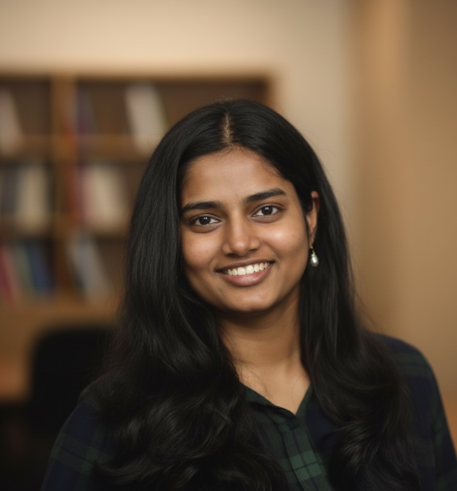

About

I am a Ph.D. student in the Halıcıoğlu Data Science Institute at UC San Diego, advised by Dr. David Danks. My research focuses on the design, development, and governance of AI systems—advancing techniques for fairness, bias mitigation, and the ethical deployment of machine learning.
I approach these challenges using tools from game theory, reinforcement learning, and AI safety, with an emphasis on building adaptive, accountable systems that function effectively in dynamic and uncertain environments.
Selected Publications
-
Nandhini Swaminathan, David Danks.
Digital Society, 3(1), 7. 2024. -
Nandhini Swaminathan, David Danks.
Pluralistic Alignment Workshop at NeurIPS. -
Nandhini Swaminathan, David Danks.
arXiv preprint. 2024. -
Nandhini Swaminathan, David Danks.
IEEE International Conference on Quantum Computing and Engineering (QCE). -
Arpita Gupta, Nandhini Swaminathan, Ramadakrishnan Balakrishnan.
Journal of Mechanics of Continua and Mathematical Sciences, 15(7), 352.
Scholarships & Awards
-
LWT Summit ScholarshipCompetitive scholarship to attend the flagship summit, recognizing contributions to the tech community.
-
Runner-up, Infinity HackathonSecond place in the annual competition, demonstrating technical and problem-solving capabilities.
-
Delegate, Harvard Project for Asian and International Relations (HPAIR)Selected among 300 international students and professionals at a conference on foreign policy, technology, and science in the Asia region.
Leadership & Service
-
Contributes to technology policy discussions and initiatives within the ACM.
-
Advises the Chancellor on gender equity and the status of women at UC San Diego.
-
Contributed to DEI initiatives in Computer Science and Engineering; represented the department at external conferences and supported underrepresented groups in computing.
-
Illuminate (NGO)
Writing
- "Neuro-Symbolic" AI — Where deep learning meets traditional rule-based coding. Mar 2022
- How Gravity Could Unravel the Mysteries of the Fifth Dimension — And how the Large Hadron Collider is helping solve it. Jan 2024
- Book Review: The Big Nine by Amy Webb — Bridging fiction, mystery, and technology. Sep 2023
- Image Refinement Essentials — Bayesian techniques, Markov random fields, and Gibbs sampling. Jul 2023
- Meta Quest 3 vs. Vision Pro — A comprehensive comparison of VR headsets. Jun 2023
- Build a Docker Container for Your Python Application in 5 Minutes — Containerization using Docker and an intro to Kubernetes. Jun 2023
Contact
I'm always open to discussing research, collaboration, or new opportunities. The best way to reach me is by email.